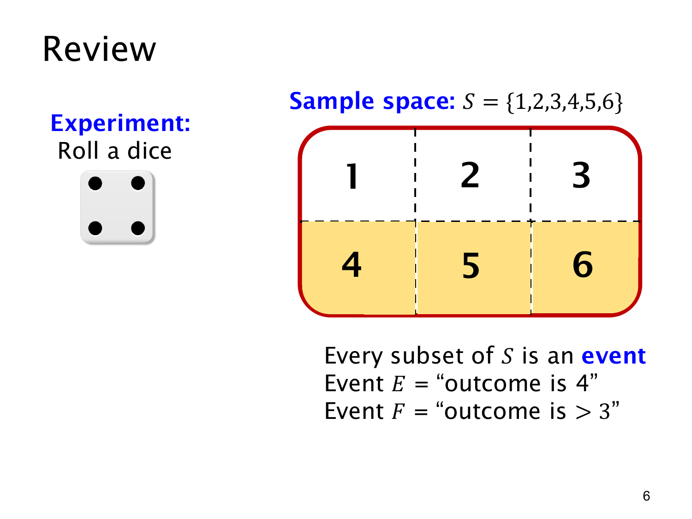

L1.9 · 第 6 页讲解原文
查看这一页课件

事件的包含关系
图中下排的三个黄色格组成事件 F，表示“结果大于 3”：
F={4,5,6}.
“F 发生”只要求实际点数是其中任意一个，并不表示一次掷出了三个点数。公平骰子的六个结果等可能，因此
p(F)=∣S∣∣F∣=63=21.
此前的 E={4} 全部包含在 F 内，即 E⊆F。掷出 4 时，两件事都发生；掷出 5 时，只有 F 发生。所以 E 发生能推出 F 发生，反过来推不出来。
集合运算也给出同样的关系：
E∩F=E,E∪F=F.
同时满足两个条件只剩 4；满足其中一个条件仍是 4、5、6。计算“或者”时，4 只数一次。